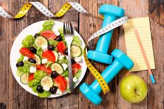

Las 5 Claves de la Nutrición Post-Entreno
Descubre qué comer inmediatamente después de tu sesión para maximizar la recuperación y el crecimiento muscular.
Leer ArtículoConsejos de nutrición, rutinas de entrenamiento y motivación para el adulto de 20-40 años.

Descubre qué comer inmediatamente después de tu sesión para maximizar la recuperación y el crecimiento muscular.
Leer Artículo
No tienes tiempo? Te mostramos una rutina de Alta Intensidad que puedes hacer en poco tiempo con resultados notables.
Leer ArtículoIdeas y técnicas mentales para asegurar que la cama no gane la batalla contra el gimnasio.
Leer Artículo